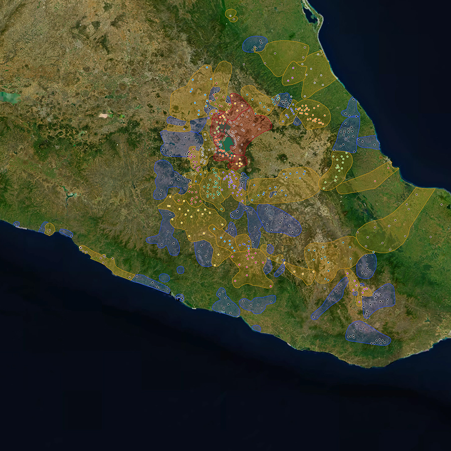
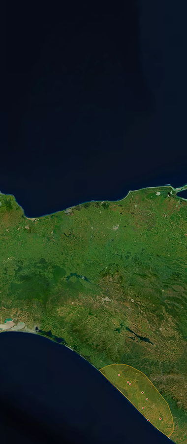
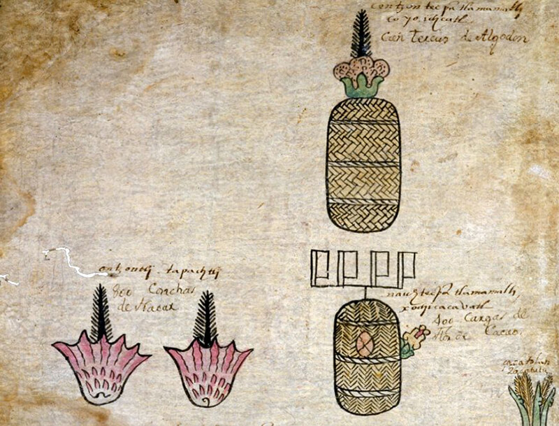
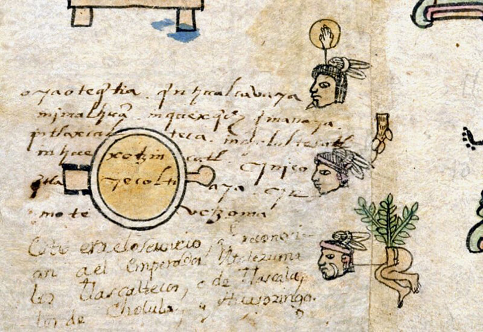

Codex
Empire and Tributes
Many human societies have imagined their capital cities as “exemplary centers.” This means that such capitals are thought of as not only centers of empires, but also as centers of the “civilized” world. Such capitals are often conceived as microcosms where the whole world is contained in miniature. One way that a capital’s status as an exemplary center is conveyed is through its architecture: buildings and streets are organized into four or five parts to represent the cardinal directions (North, South, East, West, and Center). Another way to convey a capital’s status as an exemplary center is through portable objects, especially objects received as tribute. By bringing tribute items into the capital from far away, the control of the capital over the distant limits of its empire is made tangible. Indeed, we can think of empires as animate, pulsing with connections linking the periphery to the center (the inward flow of tribute to the capital) and the center to the periphery (the outward flow of warriors, governors, and settlers sent by the capital to occupy and control distant provinces).


Map of the Aztec Empire.
The Matrícula represents this pulsating spatial structure. It begins at the margins of the Aztec empire, showing a series of frontier settlements on pages 1r-1v. On page 2r, the Matrícula then shifts to Lake Texcoco and the island-capital at the center of the Aztec empire. The place signs of the two cities that shared that island are represented (Tenochtitlan and Tlatelolco), as are the name glyphs of four of the rulers of those cities in the fifteenth century (Itzcoatl and Axayacatl, rulers of Tenochtitlan; Quauhtlatoa and Moquihuix, rulers of Tlatelolco). Above these figures, and continuing on 2v, is painted the tribute that Tlatelolco had to render to Tenochtitlan after it was definitively conquered by Axayacatl in 1474.
The following pages (3r-16v), which cover the various tribute provinces ruled by Tenochtitlan, expand geographically. You will remember that part of page 2r, and all of 2v, listed the tribute owed to Tenochtitlan by its island neighbor Tlatelolco. Starting on 3r, the Matrícula crosses the waters of Lake Texcoco to describe the tribute provinces surrounding the capital. As you read through the pages of the Matrícula, you gradually move farther and farther away from the heart of the empire. The Nahuas, like many Mesoamerican peoples, conceived of the world as an island floating on a great sea, whose blue waters merged on the horizon with the blue sky. It is therefore no accident that the Matrícula ends by describing colonies on the watery frontiers of Mesoamerica: traveling far south along the Pacific coast to distant Xoconochco (in what is now Guatemala, 13v), before turning north to list provinces along the shores of the Caribbean coast (14r-16v).
The Aztec empire, then, spanned the watery limits of the Mesoamerican world. Given what we know of other ancient empires, it is no surprise that the Aztec divided their vast dominion into five zones, one for each of the five cardinal directions (North, South, East, West, and Center). This five-part division is reflected in the pages of the Matrícula (and the Codex Mendoza, which was copied from it). Johanna Broda has analyzed the tribute in warrior costumes which almost every tribute province was expected to deliver annually. She shows a clear correlation between where a province was located and the number of warrior costumes that were demanded of it. These correlations of location and quantity fall into five clearly differentiated groups. The five “Central” provinces each had to deliver 8 different styles of warrior costumes annually (totaling from 46 to 103 individual outfits, depending on the province). The five “Northern” provinces each had to deliver 4 or 5 different styles of warrior costumes each year (totaling from 42 to 62 outfits). The five “Western” provinces had to deliver from 1 to 3 styles annually (totaling from 21 to 41 outfits). The seven “Southern” provinces had to deliver 1 or 2 different styles annually (totaling 1 or 2 outfits). Finally, the five “Eastern” provinces also had to deliver 1 or 2 different styles annually (but always 2 outfits in total). This division cannot be explained because of the availability of raw materials. All of these warrior costumes were covered with the brightly-colored feathers of tropical birds. Most of these birds lived on the Caribbean and Pacific coasts, or in the highland cloud forests of Guatemala far to the south. Yet relatively few costumes were demanded of the Eastern and Southern provinces, the provinces which would have had the easiest access to brilliant feathers. Instead, the greatest quantity of warrior costumes was demanded from provinces in the dry highlands of Central Mexico, provinces surrounding Tenochtitlan. This meant that the inhabitants of these central provinces first had to trade for unworked feathers before they could begin to create the warrior costumes demanded of them. The five-part division of the Aztec empire (as revealed by demands for warrior costumes) was therefore a symbolic division, and was not linked in any simple way to the practical availability of raw materials in the different regions.
This is not to say, however, that local resources and geographic variation played no part in Aztec tribute demands. Many of the items offered in tribute can be connected to the ecological diversity of different provinces. The province of Ciuatlan, along the Pacific coast, was expected to deliver red spondylus seashells as well as cacao and cotton (plants that thrive in the hot and humid climate of the coast; 9v). The Oaxacan provinces of Couaixtlahuacan and Coyolapa (12r and 12v) were both expected to deliver bags of cochineal, a red dye derived from an insect parasite that still thrives in these areas today. Distant Xoconochco (13r) was expected to deliver many bundles of colorful bird feathers, including the long green plumes of the quetzal (a bird that lived in the region’s cloud forests), as well as beads of greenstone (mined from veins that had been important in the region for centuries).

Tribute in red spondylus seashells, cacao, and cotton from the province of Ciuatlan (folio 9v).
All of this tribute, the wealth of these five great regions, was sent to back to the capital, Tenochtitlan. The arrival of these riches made the capital city a kind of microcosm, a container for the preciosities of the known world. We mentioned above that many Mesoamerican peoples thought of the world as an island floating in the middle of a vast ocean. The fact that Tenochtitlan was an island-city floating on a lake-sea (the waters of Lake Texcoco were mostly salty, apart from one section fed by a freshwater spring) would have made its identity as a microcosmic “exemplary center” all the stronger.
But there is something very strange about the Matrícula’s visual account of this “exemplary” empire. The pages of the Matrícula are filled with objects and place signs. But depictions of people only occur on three folios. Governors are shown on folio 1r and 1v, and the rulers of Tenochtitlan and Tlatelolco are shown on 2r. The only other place in the Matrícula that people appear is on folio 11v, which lists the tribute demanded from Tepeyacacac. There, three human heads indicate captives who were to be sent to Tenochtitlan. These captives came from kingdoms that had resisted conquest by the Aztec: Huexotztingo, Cholula, and Tlaxcala. In other words, the subjects who lived in the provinces of the Aztec empire are never depicted in this account of the empire. The men and women and children who had to provide all the tribute shown on the pages of the Matrícula are visually absent. José Luis de Rojas and Juan José Batalla Rosado have written about the “Hidden Numbers” of Aztec tribute lists. How many women did it take to spin the yarn needed for the textiles demanded by Tenochtitlan? And how many weavers were then involved? How many porters did it take to carry tribute items from each province to the capital? How many merchants were needed to supply provinces with the non-local goods that were demanded of them? We discussed above the issue of non-local tribute items, in regard to the tropical feathers needed to make warrior costumes. But warrior costumes are not the only example. Bundles of quetzal plumes were demanded of the Oaxacan province of Couaixtlahuacan, even though the nearest quetzals lived hundreds of kilometers further south.

Captives from Huexotztingo, Cholula, and Tlaxcala demanded from the province of Tepeyacacac (folio 11v).
In other words, the vision of empire recorded in the Matrícula is idealized and simplified. Its pages are painted from the point of view of Tenochtitlan. Its pages do not represent subject people, or indicate how they viewed the empire. It also is unclear if the records of the Matrícula are a set of demands (indicating what was asked of tribute provinces) or a set of receipts (indicating what goods actually arrived in Tenochtitlan). Finally, the Matrícula is static. Its pages do not indicate when each province was conquered or otherwise incorporated, or how tribute demands may have changed over time. Fortunately, other types of historical sources allow us to answer some of these questions, and to view the Matrícula’s claims more critically. Archaeological evidence on material culture exists for both the center and the provinces. Written records created in the provinces also survive. Together these sources of information complement our reading of the Matrícula.
In 1978, excavations in downtown Mexico City uncovered the remains of the Templo Mayor, the great pyramid that had been the ceremonial center of Tenochtitlan (and thus of the Aztec empire). This discovery marked the beginning of five years of intensive archaeological work (directed by Eduardo Matos Moctezuma from 1978 to 1982). The artifacts uncovered made clear the nature of Tenochtitlan as an exemplary center. Buried in the foundations of the Templo Mayor were precious objects brought from across space and time: seashells and coral, precious stones not available in Central Mexico, the skeletons of crocodiles and jaguars and tropical birds, and ancient artifacts from the Formative and Classic periods (predating the foundation of Tenochtitlan by many centuries). In other words, the kinds of objects that the Matrícula claims were brought in tribute to Tenochtitlan did indeed come to the heart of the Aztec empire. Some of these items were then buried in Tenochtitlan’s most important building.
But how much tribute actually arrived at the floating exemplary center? Are the records of the Matrícula a set of demands or a set of receipts? Fascinating research by Gerardo Gutiérrez, Viola König, and Baltasar Brito allows us to approach this issue. Their work focuses on the tribute province of Tlapa on the Pacific coast (in what is now the state of Guerrero). Sometime in the mid-sixteenth century, native peoples in this region painted an account of their history in a long screenfold book. One side of the book focused on a political-historical narrative of the region, beginning in 1429 and ending in 1564. The other side focused on a year-by-year account of the tribute payments made by Tlapa to the Aztec empire, showing how tribute demands in Guerrero increased over time (beginning in 1486, when the region was first conquered). Gutiérrez, König, and Brito call this economic history the “Tribute Record of Tlapa”. It is an incredibly valuable source, for it provides a perspective on the economic history of the Aztec empire as told from the point of view of a province. And unlike the static, undated pages of the Matrícula, the “Tribute Record of Tlapa” shows how tribute demands changed over time.

Page from the “Tribute Record of Tlapa” (the part known as Codex Azoyu II) showing tribute payments.
The “Tribute Record of Tlapa” also allows us to evaluate views of Aztec tribute demands recorded in documents from the heart of the empire. Gutiérrez, König, and Brito compare the 1520 tribute tallies of the “Tribute Record of Tlapa” with three other sixteenth-century documents: the Matrícula de Tributos, the Codex Mendoza, and an alphabetic account called the “Información sobre los tributos que los indios pagaban a Moctezuma (año de 1554).” (Information on the Tributes that the Indians Paid to Moctezuma in the Year 1554). This comparison reveals a number of fascinating things. Each of the four accounts includes slightly different items. The “Tribute Record of Tlapa,” for example, only lists gold dust, gold sheets, and woven cloth. It does not mention the warrior costumes and gourd bowls listed in the Matrícula and Codex Mendoza accounts. In terms of the amounts of cloth demanded, the “Tribute Record of Tlapa” agrees with what is claimed in the Matrícula: 6,400 pieces were sent to Tenochtitlan every year. In contrast, the “Información” says that only 3,200 pieces were sent annually. Understanding what the Codex Mendoza says is more complex. According to what is recorded by the Codex Mendoza’s images, 6,400 pieces of cloth were sent each year, thus agreeing with the “Tribute Record of Tlapa” and the Matrícula. However, according to what to what is recorded by the Codex Mendoza’s alphabetic glosses, ten times as much cloth was sent: 64,000 pieces.
Gutiérrez, König, and Brito also compare the four accounts by converting the values of the items they depict into pesos, using sixteenth-century prices. Because each account lists slightly different objects and amounts, this conversion provides a rough way to compare total values. According to these calculations, the value of goods listed in the “Tribute Record of Tlapa” totaled 13,768 pesos, that of the Matrícula 12,020 pesos, that of the “Información” 12,080 pesos, that of the pictures of the Codex Mendoza 12,100 pesos, and that of the glosses of the Codex Mendoza 69,700 pesos. In other words, even though all four sources list different combinations of items demanded in tribute, three of the four sources more or less agree on the value of tribute being demanded from Tlapa around 1520. What all of this suggests, then, is that the Matrícula represents a fairly accurate account of the tribute the Aztecs demanded and received from their tribute provinces. It also suggests that when the Matrícula was recopied as part of the Codex Mendoza, tribute totals were exaggerated. We mentioned above that, for Tlapa, the images of tribute demands in the Matrícula are the same as in the Codex Mendoza: what is different is what the alphabetic glosses of the Mendoza say. However, for other pages of the Mendoza the images of tribute demands themselves have been increased—more objects have been painted—compared to what is shown in the Matrícula.
Unfortunately, documents about tribute demands written in subject provinces have generally not survived. Tlapa is a very unusual case. Another method for evaluating Aztec tribute demands on the provinces is by archaeological research. Excavations and surface collections by Elizabeth Brumfiel, Mary Hodge, and Michael E. Smith have focused, not on the capital of Tenochtitlan, but on communities outside the center, communities that were made to deliver tribute. These excavations have provided answers to a number of important questions. What changes take place, for example, in the quantities of clay spinning tools at a place once it has been incorporated into the empire? What changes take place in the ceramics used for food production? How can we connect these changes to new tribute demands in woven cloth? How does craft production in a conquered province change compared to agricultural production? What kinds of objects made in the center of the empire start being exported to the provinces? And what doe these changes reveal about how subject peoples tried to resist Aztec tribute demands? Archaeology offers an additional—if challenging—method to evaluate the claims made by Tenochtitlan-centric documents like the Matrícula.
In sum, the Matrícula presents an idealized vision of the Aztec empire. It helps us to better understand the Aztecs, through their world view and the goods they cherished. It orders the provinces of the Aztec empire into a five-part cosmological whole, and moves from frontiers (1r-1v) to the center (2r-2v) before moving out again to the watery edges of the known world (3r-16v). But the Matrícula is idealized in another way as well. Conquered subjects, the people who made and delivered tribute items, are never shown. Apart from the governors and rulers on the first few pages, the only humans in the Matrícula are captives, tribute items themselves. In other words, the Matrícula seems to claim that tribute is produced and delivered without human effort. Our understanding of the Aztec empire should not stop, however, with this “magical” or “occult” account of effortless, personless economic production. By comparing the Matrícula with other documents and archaeological evidence, we can better understand its content, its absences, and their meanings. By looking at other sources of information, we can better understand the impact conquest had on subject communities. How did people living in conquered provinces write about their subjugation? How was daily life transformed in order to make the tribute items the Aztecs demanded? Were Aztec views of their empire accepted or rejected by subject people?
Page Contents

Imperial Outposts
PAGE 01
FOLIO 1R

Imperial Outposts
PAGE 02
FOLIO 1V

Tribute of
Tlatelolco
PAGE 03
FOLIO 2R

Tribute of
Petlacalco
PAGE 04
FOLIO 2V

Tribute of
Acolhuacan
PAGE 05
FOLIO 3R

Tribute of
Quauhnahuac
PAGE 06
FOLIO 3V

Tribute of
Huaxtepec
PAGE 07
FOLIO 4R

Tribute of
Quauhtitlan
PAGE 08
FOLIO 4V

Tribute of
Hueypuchtlan
PAGE 09
FOLIO 5R

Tribute of
Atotonilco
PAGE 10
FOLIO 5V

Tribute of
Xilotepec
PAGE 11
FOLIO 6R

Tribute of
Quahuacan
PAGE 12
FOLIO 6V

Tribute of
Tulucan
PAGE 13
FOLIO 7R

Tribute of
Ocuilan
PAGE 14
FOLIO 7V


Tribute of
Malinalco
Tribute of
Xocotitlan
PAGE 15
FOLIO 8R

Tribute of
Tlachco
PAGE 16
FOLIO 8V

Tribute of
Tepequacuilco
PAGE 17
FOLIO 9R

Tribute of
Cihuatlan
PAGE 18
FOLIO 9V

Tribute of
Tlapan
PAGE 19
FOLIO 10R


Tribute of
Tlacozauhtitlan
Tribute of
Quiauhteopan
Tribute of
Yoaltepec
PAGE 20
FOLIO 10V

Tribute of
Chalco
PAGE 21
FOLIO 11R

Tribute of
Tepeyacac
PAGE 22
FOLIO 11V

Tribute of
Coixtlahuacan
PAGE 23
FOLIO 12R

Tribute of
Coyolapan
PAGE 24
FOLIO 12V

Tribute of
Xoconochco
PAGE 25
FOLIO 13R

Tribute of
Quauhtochco
PAGE 26
FOLIO 13V

Tribute of
Cuetlaxtlan
PAGE 27
FOLIO 14R

Tribute of
Tlapacoyan
PAGE 28
FOLIO 14V

Tribute of
Tlatlauhquitepec
PAGE 29
FOLIO 15R

Tribute of
Tochpan
PAGE 29
FOLIO 15V

Tribute of
Atlan
PAGE 31
FOLIO 16R

Tribute of